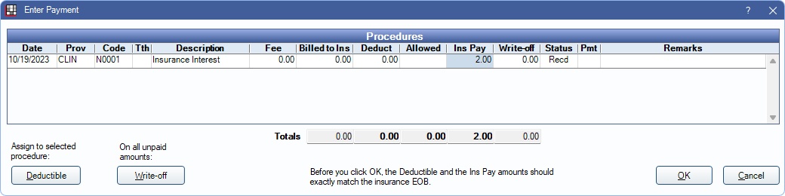
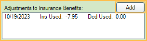

Interest on Insurance Payments
When Receiving a Claim, if there is an interest charge, there are three options for entering it.
(Recommended) Option 1: Fake Patient Method
This method allows offices to track interest amounts per insurance company and keep the interest separate from the patient account. This method also works to track service charges or other fees charged by insurance. This method is useful to avoid patients being placed on the Insurance Overpaid Report report and does not affect Insurance Remaining Calculations.
1. Create a fake patient named for the insurance company (e.g., MedDent Insurance Co. Interest).

2. In the fake patient's Family Module, add the patient's insurance plan.
3. In Add Procedure Code, create a N code procedure called interest or service charge.

4. Add the N code procedure to the fake patient's Chart Module and verify the correct provider is assigned (who should receive the charge or payment). Set the procedure complete.
5. Go to the Account Module. The N code procedure should have a zero fee. Highlight the procedure and click New Claim. Change the status to Sent - Verified. Click OK to create the claim.

6. Receive Claim: Re-open the claim and enter a By Procedure payment. Indicate the amount charged or credited by insurance. For charges (e.g., service charges), enter a negative number.

7. Finalize Insurance Payment as normal. If the interest or service charge was received as part of a bulk EOB, ensure the payment is received through a batch payment.
Option 2: Supplemental Payment Method
This method adds a supplemental payment to the claim and an adjustment to the patient account. This method results in patients being added to the Insurance Overpaid Report and affects Insurance Remaining Calculations.
1. For a specific patient, open the received claim. A finalized insurance payment should already be created for the initial payment amount.
2. Highlight a procedure, then click Supplemental.
3. Enter the amount of the interest payment, enter a note that it is an interest payment, then click OK.

4. Click Finalize Payment, enter the payment information, then click OK. We recommend entering a note that it is an interest payment.
5. If Payment and Total Payment amounts match, click OK. At least two finalized payments show in the Insurance Payments area of the Edit Claim window: one for the insurance payment amount, one for the interest amount.

6. The patient balance now reflects the interest amount. Add an addition adjustment to correct the patient's balance. We recommend creating an Interest addition adjustment type in Definitions: Adj Types

7. To prevent the interest from being included in the patient's Insurance Remaining Calculations for the benefit year, add a negative Adjustment to Insurance Benefits matching the interest amount (e.g., if insurance paid $2 interest add a -2 adjustment to insurance benefits).

To track interest amounts, run the Daily Adjustments Report.
Option 3: Write-Off Method (PPO Insurance Plans Only)
If interest was paid on a PPO and the write-off amount is greater than the interest payment, follow these steps. This method keeps the account accurate, but does not track interest amounts. This method affects Insurance Remaining Calculations.
1. Open the claim
2. Click By Procedure to receive the claim.
3. Reduce the write-off amount by the interest payment amount. (e.g., if the write-off was $40 and interest was $2, enter the write-off as $38)
4. Enter the insurance payment, including the interest amount. (e.g., if the payment was $100 and interest is $2, enter payment as $102).
5. Add a note to Remarks of procedures where insurance interest was added.

6. Click OK to save.
7. Finalize payment as normal.
8. To prevent the interest from being included in the patient's Insurance Used calculations for the benefit year, add a negative Adjustment to Insurance Benefits matching the interest amount (e.g., if insurance paid $2 interest add a -2 adjustment to insurance benefits).